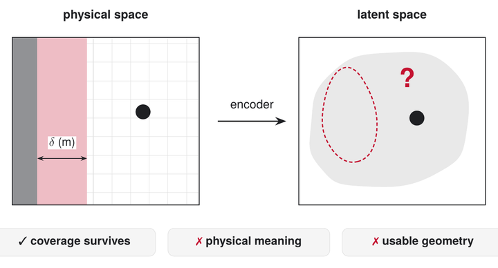

Conformal Safety Certificates in Learned Representations: What Survives and What Must Be Rebuilt
NeurIPS 2026 Workshop on Robot Learning with World Models, poster
When planning moves into a learned latent space, the statistical coverage of a conformal safety margin survives, but its meaning in metres and its usable geometry do not. A decoder head that reads clearance back in metres restores both.